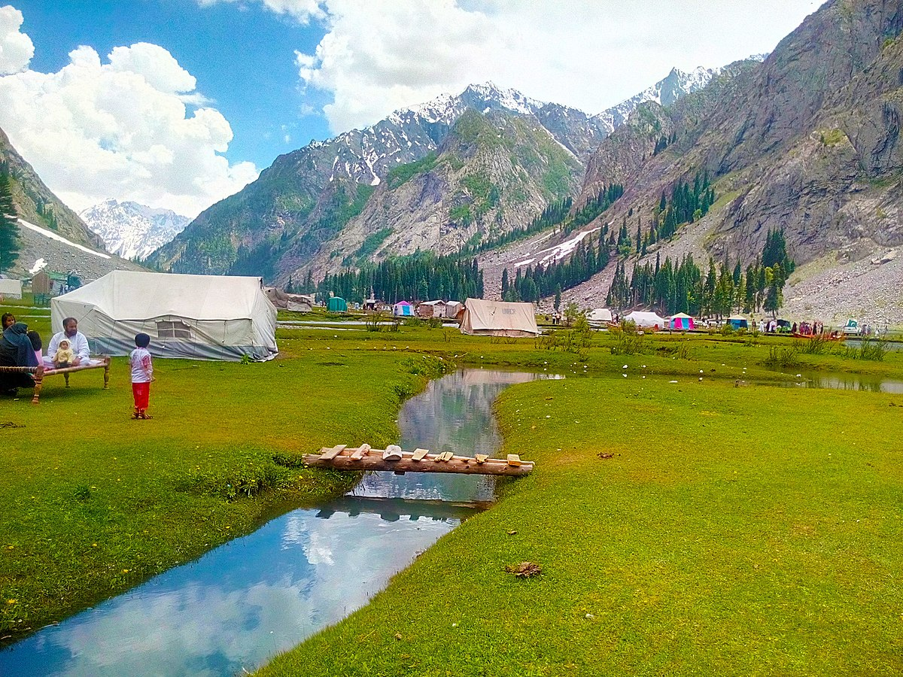

|
Kalaam:
|
Kalaam is a picturesque valley located in the Swat district of Khyber Pakhtunkhwa, Pakistan. It is situated at an altitude of approximately 2,000 meters (6,562 feet) above sea level. Kalam is known for its scenic beauty, lush green landscapes, and crystal-clear rivers. The valley is surrounded by snow-capped mountains, including the majestic peaks of the Hindu Kush range. The area is blessed with abundant natural beauty, making it a popular tourist destination for nature enthusiasts, hikers, and adventure seekers. Kalam is famous for its pleasant climate, especially during the summer months when people flock to the valley to escape the heat of the plains. The valley is dotted with picturesque spots, including Ushu Forest, Mahodand Lake, and Matiltan, which offer breathtaking views and opportunities for hiking, trekking, and camping. One of the major attractions in Kalam is Mahodand Lake, located around 35 kilometers from the town. The lake is surrounded by lush green meadows and towering mountains, creating a serene and peaceful environment. Visitors can enjoy boating, fishing, and picnicking by the lake while soaking in the natural beauty. The town of Kalam itself offers a range of accommodations, including hotels, guesthouses, and camping sites, to cater to the needs of tourists. Local markets and bazaars provide opportunities to purchase traditional handicrafts, souvenirs, and local cuisine. Kalam is also known for its rich cultural heritage. The valley is inhabited by the Swati people, who have their distinct culture, traditions, and hospitality. Visitors can experience the warm hospitality of the locals and learn about the local customs and way of life. It's important to note that the accessibility to Kalam may vary depending on the weather conditions and road conditions, particularly during the winter months when heavy snowfall can temporarily close off certain routes. |
 |